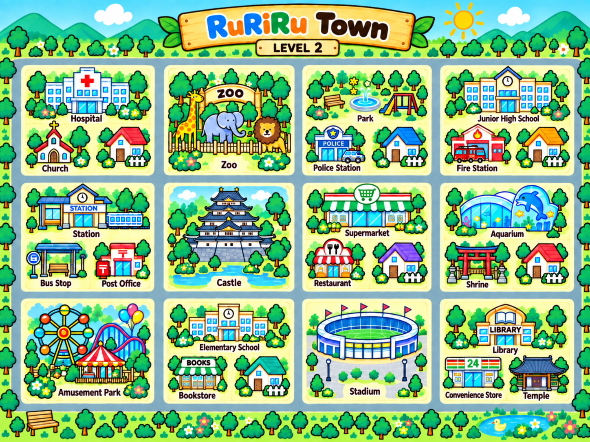

道路は格子状です。横道は上から1〜4、縦道は左から1〜5です。区画は4列、3段あります。STARTは外周の交差点に、左上から時計回りにA〜Nの順にあります。
上段（横道1と2の間）の区画は左から、HospitalとChurch、Zoo、ParkとPolice Station、Junior High SchoolとFire Station。
中段（横道2と3の間）は左から、StationとBus StopとPost Office、Castle、SupermarketとRestaurant、AquariumとShrine。
下段（横道3と4の間）は左から、Amusement Park、Elementary SchoolとBookstore、Stadium、LibraryとConvenience StoreとTempleです。